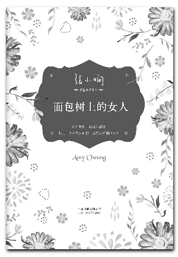

面包树上的女人
作者：张小娴
摘抄人：吴泽发 时间：2014.12
（一）想要忘记一段感情，方法永远只有一个：时间和新欢。要是时间和新欢也不能让你忘记一段感情，原因只有一个：时间不够长，新欢不够好。
（二）深情是我承担不起的重担，情话只是偶尔兑现的谎言。
（三）如果情感和岁月也能轻轻撕碎，扔到海中，那么，我愿意从此就在海底沉默。你的言语，我爱听，却不懂得，我的沉默，你愿见，却不明白。
（四）我把青春投资在他身上，他成功了，也许会爱上另一个女人。他失败了，我 一无所有。 爱情太不可靠了，只有事业才是一份耕耘一份收获的，我想有自己的事业。
（五）我渐渐了解，我正爱着的人，是一个很难让我了解的人。 他会忘掉我在等待他，却为我写一首歌。听到那首歌之前，我从来没有想过，他对我那样情深。 他有本事令我快乐，也最有本事令我流泪。 他爱上一个人，说不出原因。不爱一个人，也不会说原因。他原来是一个不值得依赖的男人。
（六）不能把你留在身边，不是你的过错，而是我的失败。在你曾经爱过我的那些短暂岁月里，我或许是世界上最幸福的人，只是那些日子已成过去，要留也留不住。我知道爱不可以乞求，如果我能够为你做一件事，便是等待。
（七）人不是因为遇到一个人而改变自己，而是你内在很想改变，你会注意到那个可以改变你的人，只有在那一刻，你的耳朵才能够听到远方的呼唤。无法从焚心般的欲望解脱出来，便无法得到内心的喜悦和平静。
（八）如果情感和岁月也能轻轻撕碎，扔到海中，那么，我愿意从此就在海底沉默。你的言语，我爱听，却不懂得，我的沉默，你愿见，却不明白。
（九）我做的最好也是最失败的事情便是爱你。